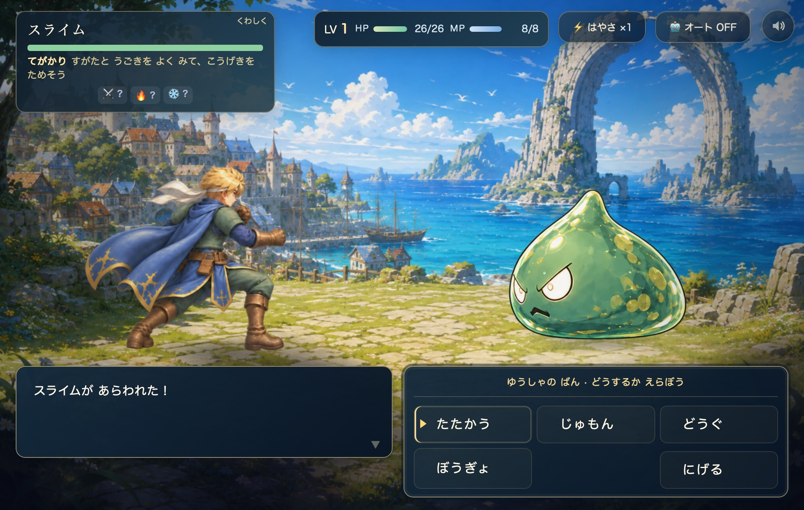
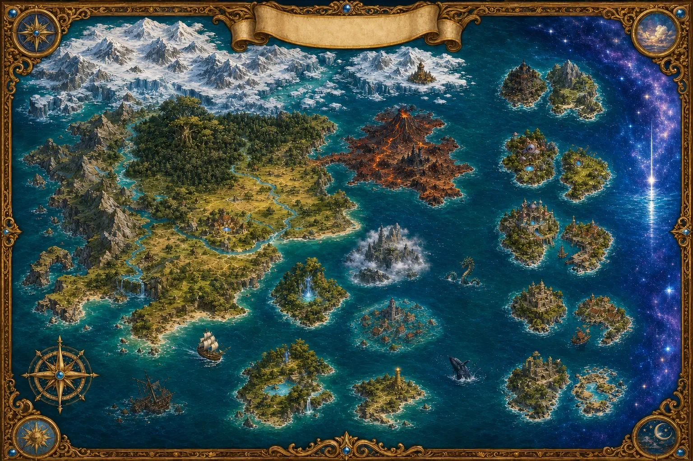

FIND YOUR NEXT STEP
次の一歩を、ここから。
全部を先に読む必要はありません。いま知りたいことだけ、ひらいてください。
画面に出た
ことばから探す。
金の帯に出た言葉を手がかりに、行き先や押す場所を探せます。
ことばから引く 01 / はじめて遊ぶ冒険のはじめ方
ゲームを開くところから、村で最初の話を聞くまで。
最初の一歩へ 02 / 戦いに備えるまもの図鑑
百九体の姿と弱点。出会った相手の名前から調べられます。
図鑑をひらくことばの 覚え書き
| ことば | 意味 |
|---|---|
| ぬし | 島の主。八つの島の 最後に 立ちはだかる（八体）。ふつうの 中ボスとは 別あつかいで、ためた 一撃が よろいでは 止まらない |
| 蒼珠（そうじゅ） | 章をおえたしるし。最大 二十こ。集めた数は画面の「きろく」で確かめられる |
| 章じゅもん | 章を おえると 覚える 特別な呪文。全二十本。ふつうの呪文とは 別のリスト |
| ⚒️ いちざの したく | 一座のふねで 買う 一点もの 八点。その島へ 渡る前に買う。ぬしの ためた一撃に 答えるための 品 |
| かたみ | 島を おえると もらう 品。館の かいろうで 実際に 使う |
| もくてきバー | 画面の下の 金の帯。押すと「次に すること」が ひらく |
| フクロ | 村の 北の丘の フクロウ。迷ったら ここ。「✨ いま できること」が 台帳 |
| ほりだしもの | 地面に うまった 隠し。全二十二か所 |
| かげ編 | 物語を おえた あとの 続き。レベルの 上限が 十八から 二十五へ ひらく |
FIRST STEPS
冒険のはじめ方
急がなくて大丈夫。最初は村で話を聞き、目の前の困りごとから旅を始めましょう。
蒼い世界の扉を開く
公開版のゲームを開きます。準備中は景色と物語が流れます。音楽を聴くときは「音ありで待つ」を押してください。準備ができたら、「冒険の扉を開く」からタイトルへ進みます。
自分の冒険を始める
タイトルの「はじめる」から進み、画面の案内に従って冒険の記録と難しさを選びます。すでに遊んだ記録があるときは「つづきから」。このガイドの敵の数値は、難しさ「ふつう」を基準にしています。
困っているお母さんに話しかける
王の話が終わると、画面の金の帯に「こまっている おかあさんに はなしかけよう」と出ます。まず、その案内をたどりましょう。金の帯は押せます。次に向かう場所を確かめられます。
王から、やくそうを2つ受け取ります。レベル1から使える呪文はホイミとメラ。お金は0ゴールドからの出発です。回復は、倒れそうになってからではなく、HPに余裕があるうちに。
戦いの前に、これだけ
HPとMPを見る
HPは体力、MPは呪文を使う力。回復の呪文もMPを使います。戦いのメニューに出る回復量や、使えない理由を見て選びましょう。
相手に合わせて選ぶ
いわゴーレムには、普通の攻撃より火が効きます。強そうな相手に急いで挑むより、準備を整え、呪文やどうぐも試してみましょう。
夜になったら慎重に
夜のまものは昼より強くなります。HPが減っていたり回復が少なかったりするときは、村に戻るのも冒険のうちです。
金の帯を押して行き先を確認。操作を読み直したいときは、村の北の丘にいるフクロの「❓ あそびかた」へ。
最初に出会うまもの
同じ相手でも、夜や難しさによって数値が変わります。下は「ふつう」の基準値です。
画面の 見方
いま向かう場所は金の帯、操作や記録はメニューから。画面の見どころと、冒険を続けるための保存方法をまとめました。
画面の 部品
| どこ | なに |
|---|---|
| 下の 金の帯 | もくてきバー。いま すべきことが 一行。押せます——押すと 行き先の 案内が ひらく |
| 金色の目印 | いまの めあて。金の帯の案内と合わせて、次に話す相手や向かう場所を確かめる |
| 出口の目印 | 別の場所へつながる出口。そばに出る行き先の名前を確認して進む |
| 左下の「きろく」 | 蒼珠を集めた数が「0/20」のように表示される。旅の進み具合を見る手がかり |
| LV / HP / MP | レベル・体力・呪文の力 |
| つよさ | 現在の強さや装備を確認する入口。買い物の前に、今の装備と見比べたいときにも |
| ☰ | メニュー。「つよさ」「たびじたく」「じゅもん」「たびのメモ」「ずかん」「そうびちょう」「きろく」など。記録の持ち出しや、タイトルに戻る操作もここから |
戦いの コマンド

| コマンド | 中身 |
|---|---|
| たたかう | つるぎで 斬る。かいしんが 出ると まもりを 無視して 大きく 入る |
| じゅもん | ふつうの呪文と 📖 ものがたりの じゅもん（章じゅもん）。行ごとに 効果と、使えない ときは その わけが 出る |
| 金色に 光る行 | 「いま これを 押すと 局面が 変わる」という しるし。同時に 一行だけ。序盤の HPが へった ときの ホイミが これ（レベル四で 消える） |
| どうぐ | やくそう など。行に 回復量が 出る |
| ぼうぎょ | その手番の いたみを 55% けずる。ぬしの ためた一撃は これで 受ける |
| にげる | 逃げる。ふかみの 中では 「本当に 降りるか」を 一度 たしかめてくる |
| 👹 へんしん | かげをまとったぬしを倒すと使えるようになる。一戦に一回、ぬしの姿を借りて重い一撃を打つ |
フクロ（村の 北の丘）
旅の案内をしてくれるフクロウです。新しく始めた直後は「❓ あそびかた」を読めます。旅が進むと「✨ いま できること」に案内が増え、島への入口や、まだ試していない遊びを確かめられます。
| 行 | 中身 |
|---|---|
| ❓ あそびかた | 三つの きほんを いつでも 読み直せる |
| ⚔️ ぬしの こえを ききなおす（いま N/7） | 島の遊びの 入口はここ。倒した ぬしと もう一度 立ちあう |
| 🚢 一座の ふね | ⚒️ したくを 買う・島へ 渡る |
| 🪙 しまの ほりだしもの | いくつ 見つけたか。のこりの 島の 名前だけ ささやく |
| 🌿 やまびこのたに | にげる こだまを おいかける（たにの 遊び） |
| 🔥 のこりびの ふかみ | かげ編でひらく。台帳に現れたら、もぐって稼げる |
（ならぶ 行は 進み具合で 変わります。上は クリア後の 例です。）
記録して、また旅に出る
同じ端末で続きを遊ぶ
☰メニューの「きろくして タイトルへ」で区切りをつけます。次は同じゲームのURLを、同じブラウザで開いて「つづきから」へ。
別の端末へ持っていく
☰メニューの「📁 きろくを もちだす」から、記録の書き出し・読み込みの画面を開きます。送り出す端末では「記録をファイルに保存」。受け取る端末では「ほかの端末の記録を持ち込む」からファイルを選び、空きのぼうけんのしょへ取り込みます。元の記録は、続きが開けるまで残してください。
GitHubの旧ゲームで遊んだ記録は、新しいNetlifyのゲームへ自動では移りません。端末やブラウザを変えた場合も別の記録になります。古い記録や書き出したファイルは、新しい場所で続きが開けることを確認するまで残してください。
iPadで遊ぶとき
画面の文字やボタンが見えにくいときは、縦向き・横向きを切り替えてみてください。音はゲーム側の音量と、端末側の音量を確認します。記録を残したいときは、プライベートブラウズを避け、いつも使うブラウザで開きましょう。
なんいど 七段
王に 話しかけると いつでも 変えられます。この本の 数字は すべて「ふつう」。ほかの きびしさでは 下の 倍率が かかります。
道のり
全二十一章。自分が いまどこに いるかは、村の フクロか、下の金の帯が 教えてくれます。先の章の舞台・相手・もらえる呪文も載っています。知りたくないときは、いま遊んでいる章だけ確認してください。
章ごとの道のりを見る 先の舞台・相手の名前を含みます
島のぬしと、物語のその先 クリア後の内容を含みます
八つの島と、その ぬし
第三部は 島めぐりです。それぞれの島の 最後に ぬしが います。ぬしは ふつうの中ボスとは 別あつかいで、ためた 一撃は よろいでは 止まりません——ぼうぎょ・章じゅもん・⚒️したく で 答えます。
数字は なんいど「ふつう」。赤＝よく効く／青＝効きにくい。
その あとに あるもの
| 名前 | 入口 | 中身 |
|---|---|---|
| 最終章 ほしのうみ | 章二十の あと | 「ほしのもんどう」＝かげの 困りごとを 見て、共鳴する カードを 三枚から えらぶ。被弾も MP消費も なし |
| うら章 ほしのみなもと | ぬしのこえを七つ集める → 村の「はじまりの ほしあかり」 | 関門 三体（火・氷・ぶつりを 読み分ける）→ ボス。勝つと 呪文「みなもとのひかり」 |
| かげ編 | ぬしの こえ 七つを 集めて うら章を おえる | ぬし七体が かげを まとって 復活。倒すたび へんしんを 得る。レベル上限が 十八 → 二十五へ |
| のこりびの ふかみ | かげ編で、台帳に現れたら | もぐるほど 稼ぎが 二倍ずつ。降りるか 続けるかを 毎回 えらぶ。負けても 袋の中身だけ 失う |
旅する場所
そうげん・もり・どうくつ・こおりのせかい……この世界は 三十六の面で できています。名前を 押すと、その面の たからばこ・でぐち・やど・いずみ・みせ・出る まものが ひらきます。データはAzure版111に合わせています。

- こおりの せかい
- もり
- そうげん
- ちそこ
- かたりのおか
- たびげいにんの ぶたい
- かざん
- はてのしま
- とわのふち
- しずみのさと
- みなもとのもり
- わすれのうみ
- みおくりのみさき
- こころのにわ
- くらのしま
- やまびこのたに
- ほらふきじま
- わすれうたのしま
- あつめのやかた・はこのへや
- かぜまちじま
- ときかさねじま・ゆうぐれ
- しおわかれのかいきょう
- ほしのうみ
島の 遊び ― 七つ
島には、その場所ならではのしかけがあります。合図に合わせて触る・追いかけるなど、島ごとの遊びを試してみましょう。画面に出る「タップして」の合図が手がかり。ここでは、その場所と遊び方を見比べられます。
島のぬしに再び挑むときは、台帳の再戦案内を開きます。やまびこのたにの追いかけ遊びは、台帳の「🌿 やまびこのたに」から選べます。
強く なる
レベル・じゅもん・そうびを見直して、次の戦いに備えましょう。レベルの上限は 物語を おえた ところで 十八、かげ編に 入ると 二十五まで ひらきます。
そうびの 入口は 四つ
まちの みせ
むら・ゆきのまち・ちそこ・なかうみの うきみせ など。入口で品物の種類を選び、装備の強さや値段を見比べます。購入を決める前に、確認画面で今の装備との違いを確かめましょう。
⚒️ いちざの したく（八点）
一座のふねで 買う 一点もの。その島へ 渡る前に 買うのが 値打ちです。それぞれ 一つの島の ぬしの 手口に 答えるように 作られています。六千〜一万八千ゴールド。ほしのてつ 一つが 三千ゴールドぶんとして 支払いに 使えます（一度に 三つまで。てつが 効くのは この 八点 だけです）。
⚒️ かじ
ともしびのま（どうくつ→ちそこ→おおほりあと の おく・章九で ひらく）、または 船の上。ほしのてつで つるぎ・よろいを 打ち直します。かげ編に 入ると かげいし 二つ＋二千ゴールドで たね 一つにも 交換できます。
島の おくりもの（八点）
島を おえると 自動で 手に入ります。買える品より 数が 上——第三部の そうびの 背骨です。
⚒️ いちざの したく ― 八点
じゅもん ― ふつうの 二十四本
レベルで 覚えます。ホイミは さいしょから 持っています。みなもとのひかり は うら章の ごほうび。
じゅもん ― 章じゅもん 二十本
章を おえると 覚えます。戦いの「じゅもん」→「📖 ものがたりの じゅもん」に ならびます。一つの戦いで 一本ずつ。
レベル 一〜二十五
物語を おえた ところの 上限が 十八。かげ編に 入ると 二十五まで のびます。
どうぐ
みせの 品
そうびの こせい
つるぎ・よろいには 数字の ほかに こせいが つきます。数が 下でも こせいで 上回ることが あります。
| こせい | 中身 |
|---|---|
| かいしん | まもりを 無視する 一撃の 出やすさ |
| どく | 斬ると 相手が 毒に なる |
| きゅうしゅう | あたえた いたみの 何割かを HPへ |
| きょじん特効 | 大きい相手（ぬし・きょじん）に 一.六〜一.七倍 |
| 二かい斬り | 一手番に 二回 斬る |
| 大技やわらげ | ぬしの ためた一撃を 何割か やわらげる。したくの よろい だけが 持つ |
| かわす／たちなおり | 攻撃を かわす／毎ターン HPが もどる |
まもの図鑑
百九体の姿と弱点を収録。数字は難しさ「ふつう」の基準値です。名前や絵を押すと、詳しい情報がひらきます。
ことばから 引く
画面の いちばん下の 金の帯に 出た ことばを、そのまま ここへ 入れてください。どこへ 行って、何を 押すかが 出ます。この索引には 二百十四本を収録しています。数が 変わる ところは ◯ と 書いてあります。
よく 出る ことば 六十六。押すと その ことばの 行だけに なります。
帯の うしろに つく「✦ほしのうみまで あと ◯つ」は 第三部の あいだ ずっと 出る 数で、行き先とは 関係ありません。
かくし
宝探しの答えや、ぬしへの対策をまとめました。必要になった項目だけひらいてください。クリア後の内容も含みます。
ほりだしもの ― 二十二か所
地面の どこかに うまっています。そのマスに 立って 足もとを 押すと 出ます。フクロの 台帳の「🪙 しまの ほりだしもの」で いくつ 見つけたかが 分かります（場所は 教えてくれません）。
ぬしとの戦いと、クリア後の秘密 相手の手口と対策を詳しく見る
ぬしの くせ ― 戦い方
章十三〜十六の ぬしは、戦いの 中で その島の 動詞を 仕掛けてきます。一つの手番に 一つだけ。かげ編の 戦いでは 出ません。
| ぬし | くせ | こたえ |
|---|---|---|
| しまいこむもの | しまいこむ——初手で どうぐ か じゅもんを 袋に しまう（コマンドが 灰色に なる） | ⚔️ を 二回で 破って とりかえす。相手が 二手番 うてば 自然に 戻る。一戦に 二回まで |
| もとをただすもの | こだまがえし——かまえた ところへ 打ちこむと、あたえた いたみの 四割が はねかえる | かまえている 手番は ぼうぎょ か じゅもん。残りHP一で 必ず 止まるので 死にません |
| まことをせまるもの | うそのため——ためる ほのおが 白い ときは うそ（一撃は 来ない） | 白ければ 見抜いて ⚔️＝かいしん確定。だまされても 罰は なし。一回目は 必ず うそ |
| わすれられしもの | まるのみ——おおくちの あいだ じゅもんと どうぐが 灰色（のまれる。ただし 減らない） | 口の 中へ ⚔️＝かいしん確定 |
ぬしの ためた一撃 ― 受け方
島の ぬし 八体と、かげ編の ヴォルガ。この 九つの 一撃は よろいの数字では 止まりません。生の いたみが 天井を はるかに 超えるので、いくら 鍛えても さいだいHPの 七割（なんいど「ふつう」）に 張りつきます。答えは ぼうぎょ・章じゅもん・⚒️したくの よろい の三つ。予告は 一手番 前に 出ます——下の「予告」の行が 画面に 出たら、次が その一撃です。
どれだけ 減るか
下は、ぬしのためた一撃への対策です。痛恨の一撃は別の計算で、まもりを上げても一定以下には減らない場合があります。
クリア後に できること
| 名前 | 中身 |
|---|---|
| ⚔️ ぬしの こえを ききなおす | 倒した ぬしと もう一度。勝つたび「物語の はじまる前」を 一言ずつ 語る（七つ）。島の遊びの 入口でもある |
| 🌌 はじまりの ほしあかり | 七つの こえが そろうと ひらく うら章 |
| ⚔️ かげまとう ぬし | かげ編。七体を 倒すと へんしんが 七つ そろう |
| 🔥 のこりびの ふかみ | もぐるほど 稼ぎが 二倍ずつ。届いた階の 次から もぐり直せる |
| 👑 ヴォルガと もういちど | かげ編の 最後。七枚の かげを 一枚ずつ はがす |
| 🎭 いちざの ぶたい | 「けいこ」＝ものがたりの こだま。何度でも。勝っても 負けても 何も 失わない |
| 👁 めぐりのけしん | なんいど「しんぱん」のときだけ 現れる |
| 👑 おうさまに あう | きびしさを かえる。ここから つよくて はじめから——そうびと 覚えた呪文を 持ち越して 最初から |
かげ編の 七体
倒した ぬしが かげを まとって 戻ってきます。HPと こうげきが 大きく 上がります。倒すと その姿に へんしんできるように なります（一戦に 一回）。
めずらしい まもの
| 名前 | 出かた |
|---|---|
| メタルスライム | 夜の 草地に まれに 現れる。二十二〜四十秒に 一度の 抽選で、同時に 一体だけ、十八秒で 消える。守備 六十・かわす 三割五分——ばくだんいし・いなずまだま は 一しか 通らない |
| きんのスライム | すぐ 逃げる。倒すと お金が 大きい |
| ものがたりの こだま | 旅芸人の ぶたいで「けいこ」。何度でも 呼べる |
| ヴォルガ しんのすがた | やみのおう ヴォルガを 倒すと この姿に なる |